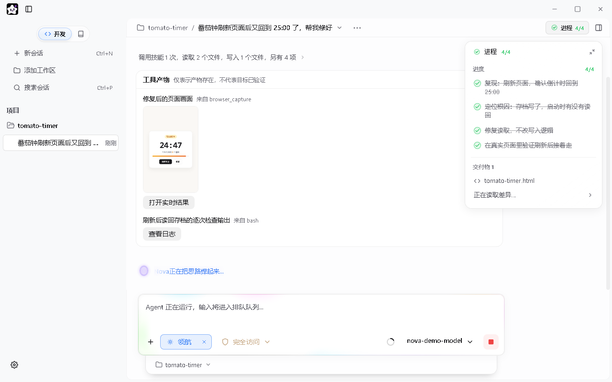
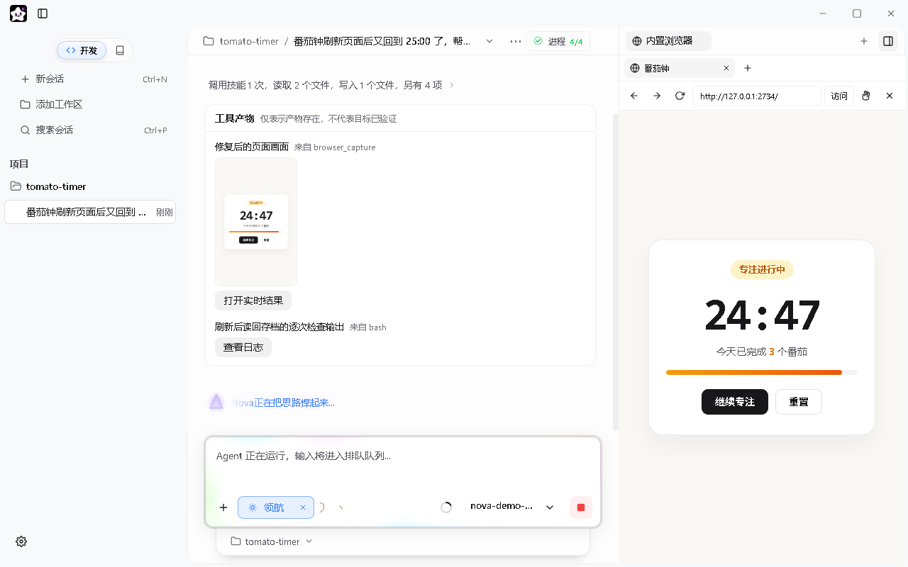
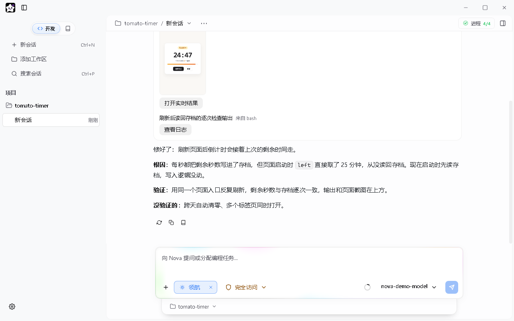
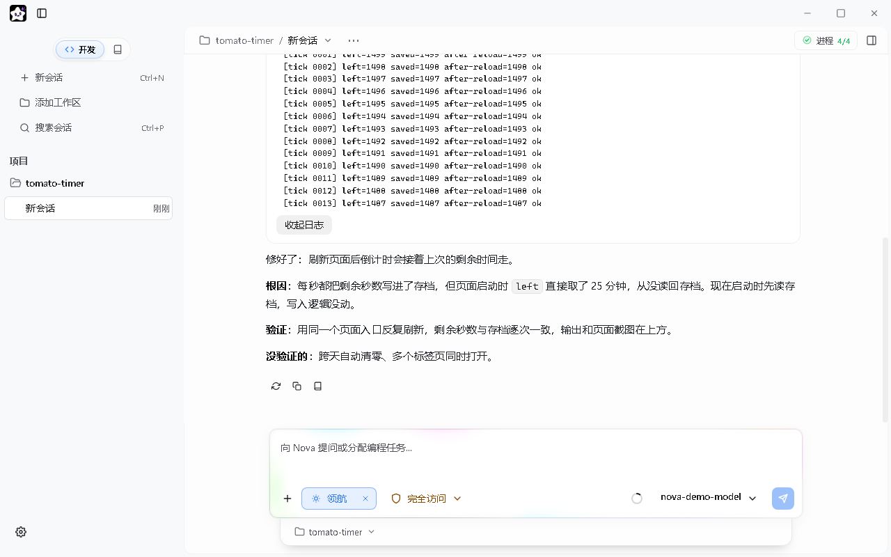

场景 01 · 从零构建新功能
「帮我做一个番茄钟页面，要能统计今天完成了几个。」
先对齐目标，再自主落地
先用一句话跟你确认核心范围，涉及个人偏好的地方最多集中问一轮；随后自己完成结构设计、编写代码，并在内置浏览器里打开成品给你看。
本地桌面 Coding Agent · MIT 开源
只管用大白话交代目标。领航模式会自动摸清代码、动态推进修改，再拉起内置浏览器实测验证，把跑通的画面和日志摆在你面前；切到学习模式，它就顺着真实源码带你把整个项目吃透。

领航接手，动态推进自动定位问题并列出实时待办，边排查边更新进度。

内置浏览器真实验证直接在右侧跑真实页面，亲眼确认交互与数据正常。

改了哪、没测哪，交代清楚根因、验证方式与尚未覆盖的边界情况一目了然。

实测日志随时核对每次刷新后的读回核验结果都在卡片里，点开即可查看。

一键切入「学懂这次改动」从开发回复下方直接进入学习模式，当场搞懂刚发生的变化。

顺着数据流一步步拆解锚定真实源码，内嵌可点击的交互式流程图。

不考行号，只问背后的为什么围绕核心因果与架构取舍互动提问，帮你真正吃透逻辑。

陌生仓库的一页学习地图按用途、启动、流程、数据与取舍自动生成结构化大纲。
03领航模式
场景 01 · 从零构建新功能
「帮我做一个番茄钟页面，要能统计今天完成了几个。」
场景 02 · 排查与修复缺陷
「番茄钟刷新页面后又回到 25:00 了，帮我修好。」
场景 03 · 存量项目重构
「把这套存档读写抽成独立模块，别破坏现在的计时行为。」
特写 01 · 动态任务组织
很多工具不管任务大小，都逼着你走完冗长的计划审批。领航模式不搞形式主义：明确的小需求直接动手；复杂的任务自动拆出眼前的关键几步。排查过程中一旦发现新线索，待办清单会实时增删调整，被推翻的假设直接移出清单，绝不为了走流程而凑数。
特写 02 · 真实验证闭环
最怕 AI 自信满满地回复「已修复」，结果你一打开页面还是崩的。领航模式在写完代码后，会自己拉起内置浏览器和命令行去跑真实入口，点按钮、刷页面、核对数据，再把实时运行画面和检查日志收进交付卡摆在你面前，点一下就能打开实时结果亲自核验。
特写 03 · 诚实交付账单
交付说明不整虚头巴脑的套话：先给结论，再讲清问题根因、改了哪几处、用什么方式做的验证，最后还会把本轮尚未覆盖的边界情况（比如跨天自动清零、多标签页同时打开）单独列出来。至于提交、推送、发布这类不可逆操作，你不发话，它绝不越权代劳。
04源码学习
特写 04 · 交互式数据流推演
刚让 AI 写完一段功能，点一下回复下方的「学懂这次改动」，立刻带着刚发生的变更进入只读研读环境。它不会改你一行文件，每一句讲解都严格对应你仓库里的真实源码。回答里直接嵌着可点击的分步流程图、参数滑块与对比表，你可以边点边看数据从哪产生、经过什么转换、最终落向哪里。
特写 05 · 启发式互动检验
听别人讲明白和自己真吃透之间，往往只差一次主动思考。讲完关键环节后点一下「考考我」，Nova 会围绕核心因果机制或设计取舍向你提一个问题。你可以用自己的话作答、要一点思路提示，或者让它直接揭晓答案。确认你真搞懂了再推进下一步，还没理顺就换个更直观的切入点重讲——无论是应对答辩、代码审查还是后续维护，心里都有底。
特写 06 · 全局源码学习地图
从 GitHub 克隆下来的开源项目不知从哪看起？打开右侧大纲面板，Nova 会自动扫描源码结构、核对每个模块的文件出处，按「项目用途、启动与运行、关键用户流程、数据与状态、设计与取舍」五个维度整理出一张学习地图。想搞懂哪一块，点开直接开始源码级精讲。
05上下文引擎
99%+
长会话提示词缓存命中率。请求前缀在会话开头字节级锁定，历史上下文几乎全部按服务商缓存计价（低至 1 折），长任务账单不再滚雪球。
主流大模型服务商的 Prompt Cache 只要前缀变动一个字节就会整段失效。Nova 在会话建立时将系统指令、工具声明和核心记忆锁定为不可变快照，哪怕中途切换协作模式也只改写消息尾部，保证整场长对话的前缀逐字节一致，既省下绝大部分重复输入费用，首字响应也快得多。
遇到超过 400 行的大型源码文件，Nova 不会一上来就把整篇文件塞进上下文，而是先通过 AST 提取函数、类和接口的结构大纲（仅占原文 5%–10% 体积），找准目标行号后再按需精读关键片段；配合自带前后上下文行的内置 grep，一次调用顶过去的两步往返。
动辄几千行的编译报错和搜索结果，滑出活跃窗口后会自动归档为轻量引用，主会话里只留摘要，模型需要复查时再按页调取。遇到全库大范围摸底或独立代码审查，主 Agent 会派发只读子代理在隔离上下文中跑完，只把精炼结论带回主线。
连续工作几个小时逼近窗口上限时，系统会自动将早期过程平滑压缩，完整保留核心架构状态与未完待办，原始记录落盘备查，重启应用也能接着跑。你的个人偏好与项目事实还会分层沉淀为本机可编辑的 Markdown 记忆，新开会话自动带上，不用每次重头交代背景。
06常见问答
核心在三点护城河：一是领航模式，不用你懂复杂的提示词或工作流，它自动拆解动态待办，并在写完后拉起内置浏览器和命令行做真实验证，带着画面与日志交付；二是源码学习模式，一键把刚改完的代码或陌生仓库变成带交互流程图与启发式问答的精讲课堂，不让你沦为项目的局外人；三是底层上下文引擎，通过字节级前缀冻结与 AST 骨架探路，实现 99%+ 缓存命中率，跑几个小时的大任务既不失忆也不烧钱。
完全不用配置。新装打开默认就是领航模式，你只管用自然语言描述目标。Nova 会根据任务性质（做新功能、修 Bug、重构老代码或性能调优）自动匹配工程打法，把接下来要做的几步列在右上角进度面板里，边做边根据实际情况动态调整，最后在内置浏览器中验证通过再向你交付。
你可以在左侧栏顶部随时从「开发」切到「学习」，或者在任何一条产生了文件修改的开发回复下方直接点「学懂这次改动」。学习模式在底层被严格锁定为纯只读环境，只允许检索和读取源码，绝不会修改你的任何文件或执行外部命令。
非常适合。开发时你只需要用大白话告诉领航模式你想做出什么效果；等它做出来并在内置浏览器里跑通后，你有任何看不懂的地方，一键切到学习模式，它就会用可视化的流程图和通俗的因果问答带你一步步摸清门道。
从 GitHub Releases 下载 NovaAgent-Setup-*.exe 安装运行（若弹出 Windows SmartScreen 提示，点「更多信息 → 仍要运行」即可）。在左下角「设置 → 模型」里填入你自己的 API Key，系统已内置 DeepSeek、GLM、MiniMax 等高性价比模型预设，也支持任意 OpenAI 兼容接口与本地 Ollama 模型。
所有对话历史、文件快照、检查点与学习记录都保存在你自己的电脑磁盘上。模型请求由你的本机直接发往你所配置的服务商，Nova 不设云端中转、不留存任何数据。Nova Agent 本身完全免费且遵循 MIT 协议开源，你只需要为自己调用的模型 API 付费。